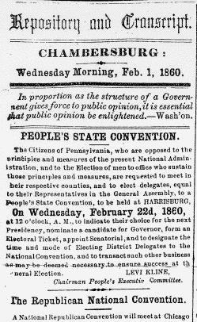

|

In the top half of column 1, the Repository and Transcript ran
information about affairs of the state and national Republican parties. On February 1,
1860, for example, this space announced the holding of state and national conventions
to nominate candidates for president. By May, however, this sort of information was
replaced by the Repository and Transcript's endorsement of candidates for
office, led by the Republican Lincoln-Hamlin ticket. Editorials appeared beginning
with the second half of column 1 and extending into column 5. These,
unsurprisingly, dealt nearly exclusively with national or state politics. On February
1, for example, editorials berated the South for its political demands in the name of
getting an "equal share," condemned Southerners for whipping their slaves, and commended Pennsylvania Representative James Moorhead for his
reproach of fellow Pennsylvania Congressman William Montgomery. Note, however,
that in the editorials the Repository diverged significantly from the Valley
Spirit not only in tone but in content as well. Where the Repository
concerned itself with broad sectional commentary in its lead editorial of February 1,
1860, the Valley Spirit instead focused on railroad policy in the state senate.
Both papers had strong positions on national political affairs, but there was no
greatly significant lead story that every paper had to comment upon. Even as the
"sectional conflict" brewed, the newspapers' priorities could lie elsewhere.
In columns 5-6, the paper ran reports from its "correspondents" (who always
wrote under pseudonyms) about political events in important locales, such as
Washington or the state capital of Harrisburg. Sometimes these correspondents traveled
further afield, as in May, when the Repository and Transcript ran
correspondence from a reporter in Chicago writing about the National Republican
Convention.
|